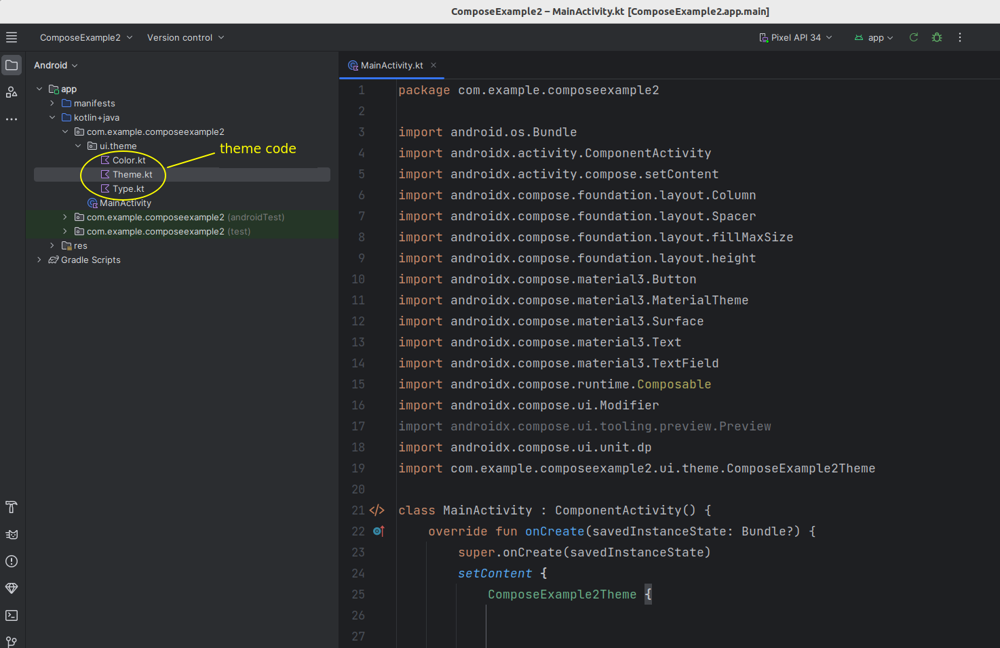

We will look at:
First, some quick revision on a topic covered in OODD. How can we specify font size? We can do it using the fontSize parameter, e.g:
Text("Hello World!", fontSize=24.sp)
What does the font size 24.sp mean? This means 24 scalable pixels, which are related to the similar unit density-independent pixels or dp. Density-independent pixels are units which scale according to the device resolution resulting in a consistent appearance on different devices. Scalable pixels scale additionally according to the user's font size preferences. We discussed this topic in OODD; please see the OODD discussion for more details.
We can modify the appearance of UI elements with modifiers which allow you to control such things as padding, borders, etc. Modifiers are optional in some cases but compulsory in others. Modifiers are compulsory in the case of the Spacer, which is an element used to provide space between other elements. Here is the previous example with a Spacer:
package com.example.jetpackcompose3
import androidx.activity.ComponentActivity
import androidx.activity.compose.setContent
import android.os.Bundle
import androidx.compose.material3.Text
import androidx.compose.runtime.Composable
import androidx.compose.foundation.layout.Column
import androidx.compose.ui.text.font.FontFamily
import androidx.compose.ui.text.font.FontStyle
import androidx.compose.ui.text.font.FontWeight
import androidx.compose.ui.graphics.Color
import androidx.compose.ui.unit.sp
import androidx.compose.ui.unit.dp
import androidx.compose.ui.Modifier
import androidx.compose.foundation.layout.Spacer
import androidx.compose.foundation.layout.height
class MainActivity : ComponentActivity() {
override fun onCreate(savedInstanceState: Bundle?) {
setContent {
TwoTexts()
}
}
@Composable
fun TwoTexts() {
Column {
Text("Hello World!", color = Color.red, fontStyle=FontStyle.Italic, fontSize=24.sp, fontFamily=FontFamily.Serif)
Spacer(Modifier.height(32.dp))
Text("Welcome to Android Development", fontWeight=FontWeight.Bold, fontSize=18.sp)
}
}
}
This creates a spacer with a height of 32 density independent pixels (see above).
Other modifiers allow us to specify padding (the space between the border of a UI element and its content) or an element's border. For example, this surrounds a GreetingComponent component with a 2 dp wide blue border and with padding of 16dp between the border and the content. The diagram below illustrates the composable's border and padding.
Note how Modifier contains many methods to modify different aspects of the element, and note how they can all be chained together.
GreetingComponent(
Modifier.border(BorderStroke(2.dp, Color.Blue))
.padding(16.dp)
)
Our GreetingComponent would now need to take a modifier as a parameter. This would then be passed onto the Column which sets the layout within the greeting component.
@Composable
fun GreetingComponent(mod: Modifier) {
var name by remember { mutableStateOf("") }
Column(mod) {
...
}
}
Material Design (see the website) is a published design philosophy which is adopted as the recommended standard in Android development. It revolves around the idea of screen surfaces being composed of material which has certain visual and behavioural properties, for example the ability to cast shadows when raised, and only UI elements at the top of a stack of elements being able to receive events. Material Design specifies a range of standard UI components, such as buttons, text fields and many others. Following the Material Design philosophy allows the development of clean-looking, usable and intuitive apps.
Material Design has a range of key aspects, with three particularly important components including:
Through colour, typography and shape, Material Design helps you design appealing and consistent UIs. How can it do this?
When designing a UI, you need to think about classifying your UI elements in terms of which should be particularly prominent to the user and which can be less prominent because they are less critical to the functionality of the app. This helps you break down the UI into different classes of component. The idea is that you style components of the same importance class similarly.
So for example prominent UI controls such as buttons should all have the same style (same colour and/or typography). Rather than using a random mix of styles in your app, with multiple different colours and fonts, you define colours and fonts for each class of UI element and apply them appropriately. So for colour for example, you create a palette of colours for your app and apply colours from this palette appropriately for different classes of UI element.
So in summary, by setting the properties of these colour, typography and shape classes you can ensure a consistent look and feel across similar elements, enhancing usability and aesthetics of the app.
Material Design features a number of so-called colour roles. These are described here. Colour roles include, amongst others:
Surface. We will discuss Surface below.Just as for colour roles, Material Design offers a range of typography classifications. See here and here for more detail. The descriptions below are paraphrased from the second of these two articles.
Having considered some of the absolute basics of Material Design, we will now see how we can use Material Design in a Jetpack Compose app.
Jetpack Compose integrates very well with Material Design and in fact supports the latest Material Design standard, version 3. Jetpack Compose allows you to define a theme, which is a collection of colours and typographies which will be applied to your Compose app. Android Studio pre-generates logic to create your theme for you.
Below shows the location of the pre-generated theme files for your project. They are within the ui.theme subpackage:

You can edit the theme files to set the theme for your app, in other words you can customise the different colour types (primary, secondary, tertiary, on-primary, etc) and typography. Color.kt contains colour definitions, Type.kt contains typography definitions and Theme.kt manages the theme as a whole. If you look inside the theme files, you can see that some definitions have already been setup for you.
The Theme.kt file in the theme package provides a function you can use to apply your theme to your UI. This will be named <project name> plus the string Theme. For example if your project is called ComposeExample2, the theme function will be ComposeExample2Theme. Because this function takes a composable function (usually a lambda) as its argument, you can simply add composables inside it and apply it as follows:
setContent {
ComposeExample2Theme {
Text("Some text")
TextField(...)
}
}
All composables inside the theme will have the theme applied to them.
Material Design components will use default settings appropriate to that component. You can also, however. access the theme's colour and typography via the MaterialTheme class. This has a colorScheme property to access the colour roles, and a typography property to access the various font styles. For example:
MaterialTheme.colorScheme.primary for the primary colour;MaterialTheme.colorScheme.onSecondary for the on-secondary colour;MaterialTheme.colorScheme.surface for surfaces (composables designed to hold other composables - see below);MaterialTheme.typography.titleLarge for the Large Title font;MaterialTheme.typography.bodySmall for the Small Body text font.You can set the color of composables directly to material colours, while the typography values give you TextStyle objects. These store multiple aspects of the text style, such as font weight and size. To set the text style of a composable, use the style property, e.g:
Text("Search results", style=MaterialTheme.typography.titleLarge)
It can be difficult to specify the precise colours and typography you want for your app manually in the theme code so that they all blend nicely. Instead, you can create your own custom theme using the graphical Material Theme Builder tool available online here. Using this tool you can pick your colour and font choices via a graphical interface, and export a Theme.kt file to use in your app.
The most fundamental UI component of Material Design is the surface. The Surface is the UI element which your Material Design theme is applied to, so you should wrap all your other components in a Surface. Surfaces can be styled, for example you can set the shape to specify the extent of curvature at the corners. You can have a surface on top of another surface, and each surface can be styled differently.
To use a Surface, simply wrap it round the other UI elements, e.g.
import androidx.compose.material3.Surface
import your.package.ui.theme.ComposeExample2Theme // replace "your.package" and the project name!
setContent {
ComposeExample2Theme {
Surface(modifier=Modifier.fillMaxSize(),shape=MaterialTheme.Shapes.large, shadowElevation=1.dp) {
Text("Some text")
TextField(...)
}
}
}
This example shows:
Modifier.fillMaxSize()) which causes the Surface to occupy the whole of its parent, in other words the Activity.shape parameter of MaterialTheme.shapes.large, in other words it will have large rounded corners;Imagine you want to display a large composable, such as a list or a map, above a row containing text fields and a button to set the location. If you think about it, this isn't so easy. If you specify the modifier for the map to be Modifier.fillMaxSize(), it will occupy the whole of the screen and there will be no room for the row. If you add the row first, it will appear on top of the screen.
What we need is another type of layout which allows us to specify exactly where each composable will be positioned, so we can position a composable at the top, the bottom, the left or the right. The Box composable allows us to do this.
In a Box, we can specify the alignment of the composables within the box. Here is an example:
Box(Modifier.fillMaxSize()) {
Button(
onClick = { }, modifier =
Modifier.align(Alignment.BottomStart)
) { Text("Bottom Start") }
Button(
onClick = { }, modifier =
Modifier.align(Alignment.BottomCenter)
) { Text("Bottom") }
Button(
onClick = { }, modifier =
Modifier.align(Alignment.BottomEnd)
) { Text("Bottom End") }
Button(
onClick = { }, modifier =
Modifier.align(Alignment.CenterStart)
) { Text("Centre Start") }
Button(
onClick = { }, modifier =
Modifier.align(Alignment.Center)
) { Text("Centre") }
Button(
onClick = { }, modifier =
Modifier.align(Alignment.CenterEnd)
) { Text("Centre End") }
Button(
onClick = { }, modifier =
Modifier.align(Alignment.TopStart)
) { Text("Top Start") }
Button(
onClick = { }, modifier =
Modifier.align(Alignment.TopCenter)
) { Text("Top") }
Button(
onClick = { }, modifier =
Modifier.align(Alignment.TopEnd)
) { Text("Top End") }
}
This layout would look something like this:
Note how we use the align() method of our Modifier for each button, to specify where it is aligned within the box. The possible values include:
TopStart - the top left of the box (but top right in left-to-right languages, such as Arabic);TopCenter - the centre of the top of the box;TopEnd - the top right of the box (but top left in left-to-right languages);CenterStart - the centre left of the box (but centre right in left-to-right languages);Center - the centre of the box;CenterEnd - the centreright of the box (but centre left in left-to-right languages);BottomStart - the bottom left of the box (but bottom right in left-to-right languages);BottomCenter - the centre of the bottom of the box;BottomEnd - the bottom right of the box (but bottom left in left-to-right languages).This discussion is a repeat of what was already covered in OODD topic 8.
You would implement a list by storing a list of data in state. You might think you could do something like this:
@Composable
fun ShoppingList() {
var listState = remember { mutableStateOf(mutableListOf<String>()) }
var currentItem = remember { mutableStateOf("") }
TextField(value=currentItem.value, onValueChange = { currentItem.value=it } )
Button(onClick = { listState.value.add(currentItem.value) } ) { Text("Add Item") }
Column {
listState.value.forEach {
Text(it)
}
}
}
Note how we have a text field which allows you to enter a shopping list item, which is stored in the currentItem state variable. When the button is clicked, the current item is added to the list. As it's a mutable list, you might think this would work.
However it does not work. The reason is that composables are only re-rendered if the state variables change. Here, when we add a new item to the list, the list becomes one element longer but the actual list variable is the same variable, referring to the same location in memory.
To trigger a re-render when a new list item is added, we have to either:
toMutableList()), add the item to that, and then reset the list state variable to the clone, orSnapshotStateList to store a list in state, using mutableStateListOf() rather than mutableStateOf(). This will automatically trigger a state change and thus a recomposition if you change the list (e.g. add new elements).SnapshotStateList:
@Composable
fun ShoppingList() {
// stateList is of type SnapshotStateList<String>
var stateList = remember { mutableStateListOf<String>() }
var currentItem = remember { mutableStateOf("") }
TextField(value=currentItem.value, onValueChange = { currentItem.value=it } )
Button(onClick = {
stateList.add(currentItem.value)
} ) { Text("Add Item") }
Column {
stateList.forEach {
Text(it)
}
}
}
One issue with a long list of items is that by default, a long list consisting of a series of Text items in a Column will not be memory efficient. Why? Let's say there are 100 items in the list, but only 10 are visible on the screen at any time. The items off the screen are still being rendered, even though they are invisible. This is clearly inefficient.
We can solve this problem through the use of lazy columns. The LazyColumn is designed to hold a series of items (i.e. a list) but is implemented with memory optimisation so that only for the items currently visible are rendered.
Creating a LazyColumn is quite straightforward, you place it in the appropriate place in your layout and then specify a lambda to control how it works. This lambda takes an object of type LazyListScope as its single parameter and this object includes an items method to specify a list of items. For example:
import androidx.compose.foundation.lazy.LazyColumn
import androidx.compose.foundation.lazy.items
@Composable
fun LazyListComposable(listItems: List<String>) {
LazyColumn {
items(listItems) { curItem -> Text(curItem) }
}
}
Note how items() takes the list of items to render as its first parameter and another lambda as its last parameter. This lambda specifies how each item in the list of data should be transformed into a Compose element. So here, each item in the list is transformed to a Text element containing its details.
Surface and place your feet-to-metres converter composable within the surface.TextField occupy the whole width of the device. I have not shown you how to do this, but you might be able to figure it out. Look at the modifier used in the Surface example, above.TextField and Button (to clear the value) on the same line. The button should have 8dp padding. Hint: use a Row to contain both elements. It should look something like this:
verticalAlignment property of Alignment.CenterVertically.TextField and Button have a width proportion of 2:1, so that the text field has twice the width of the button. Hint: you can use Modifier.weight() to do this. Give the text field a weight of 2.0f (i.e. a Float) and the button a weight of 1.0f.SnapshotStateList, as we did in OODD.
There should be, top to bottom:
Row containing a Text reading "Item", a TextField to add the item, and a Button labelled "Add" which adds the item to the list when clicked. Set the weights of the items within the row so that the TextField is three times the width of the other two items.LazyColumn containing the shopping list items. Row appears below the list. You will need to use a Box for this.Have a go at implementing a prototype of a simple messaging application using Jetpack Compose (lacking the communication-between-two-users aspect!). It should look something like this:
It should:
TextField allowing the user to enter a message;MaterialTheme.colorScheme.surface and MaterialTheme.colorScheme.primary.
Row to contain each message.Row takes, as a named parameter, horizontalArrangement which can be set to Arrangement.End (items are added to the end of the row) or Arrangement.Start (items are added to the start). Set it appropriately for each message.Row should contain a separate Surface to contain the message. The idea of a separate Surface is that it can e styled separately to the main Surface. Set its colour as described above and give it a shadowElevation of 5dp.Surface a padding. Messages on the left should have the end padding (padding on the right) set to 30dp, and messages on the right should have the start padding (padding on the left) set to 30dp. You can set individual paddings by passing named parameters to Modifier.padding, e.g:
Modifier.padding(start = ..., end = ...)
Surface should contain a Text with the appropriate message. What colour should the text be set to?Text?